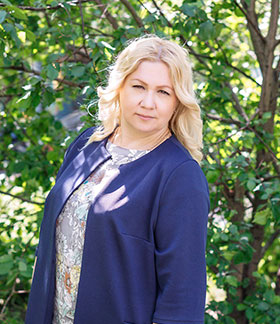

Наши специалисты
Александр
Валерьевич
Лещинский
Валерьевич
Лещинский
Директор
Надежда
Валерьевна
Соболькова-Сивергина
Валерьевна
Соболькова-Сивергина
Психолог, специалист в области трансперсональной психологии и межличностного общения, автор концепции полного раскрытия человеческого потенциала "Холопрактика", автор метода "Анима драма", провокативный терапевт, публицист, преподаватель.

Сергей
Валерьевич
Лещинский
Валерьевич
Лещинский
Практический психолог, сертифицированный консультант, специалист по терапии химической зависимости и работе с семейной системой.

Ольга Владимировна
Камышева
Камышева
Практический психолог, перинатальный психолог, специалист по семейному консультированию, детско-родительским отношениям и психосоматическим заболеваниям, сертифицированный специалист по эриксоновскому гипнозу, НЛП-практик.

Григорий
Александрович
Декшин
Александрович
Декшин
Врач-психиатр МЦСМ "Евромед", нарколог высшей квалификационной категории, психотерапевт первой квалификационной категории.
Мы - коллектив специалистов-практиков - психологов, психотерапевтов, нашедших свое призвание в профессиональном отклике на Ваши жизненно важные вопросы, эмоциональные состояния и глубокие личные переживания.